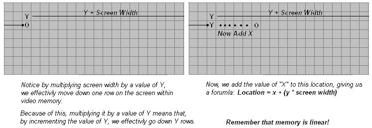

|
|
|
| Operating Systems Development Series | |
|
This series is intended to demonstrate and teach operating system development from the ground up. IntroductionWelcome! :)We have went over alot so far, havn't we? You should now be aware of the amount of complexity there is in OS development. And yet--it only gets harder. This is our first two-part tutorial. The first part will describe all of the new code in detail. We will cover basic 32 bit graphics programming in assembly. This includes: Basic VGA Programming concepts, accessing video display, printing strings, clearing the screen, and updating the hardware cursor. There is a little math involved, but not too much :) The demo itself is completed. It will be shown in the second part of this tutorial, along with an overview of the completed Stage 2 source code, including its new little FAT12 driver, Floppy driver. These are not "real" drivers by definition that we will add. However, they will help demenstrate the functionality of drivers, and why they are usefull. All of the code is a heavily modified version of our FAT12 loading code from the bootloader, so I will not be describing FAT12 again in detail. With that, Part two--as being the last tutorial for Stage 2--will go over the loading and executing of a basic (pure binary) Kernel image at 1 MB. This two part tutorial is the last tutorial for Stage 2! When we start the Kernel, we will need to cover different executable format files. We will need to insure Stage 2 executes the object files correctly. Because of this, when we start the Kernel, we will add the loader to our current Stage 2 bootloader to insure it loads our Kernel correctly. This is later, though :) With all of that in mind, Part 1 of this tutorial covers:
Ready? The DisplayVGA - TheoryThe Video Graphics Array (VGA) is an anolog computer display standard marketed in 1987 by IBM. It is called an "Array" because it was originally developed as a single chip, replacing dozens of logic chips in a Industry Standard Architecture (ISA) board that the MDA, CGA, and EGA used. Because this was all on a single ISA board, it was very easy to connect it to the motherboard.The VGA consists of the video buffer, video DAC, CRT Controller, Sequencer unit, Graphics Controller, and an Attribute Controller. Please note that, we will not cover everything in detail yet until we start talking about video drivers. This is primarily to preseve space, and to make things more easier as programming the VGA can get quite complex.
Video BufferThe Video Buffer is a segment of memory mapped as Video Memory. We can change what region of memory is mapped to video memory. At startup, the BIOS maps it to 0xA0000., which means that video memory is mapped to 0xA0000. (Remember the Real Mode Address Map from Tutorial 7?) This is important!Video DACThe Video Digital to Analog Converter (DAC) contains the color palette that is used to convert the video data into an analog video signal that is sent to the display. This signal indicates the red, green, and blue intensities in analog form. We will go into more detail later, so don't worry if you do not understand this yet.CRT ControllerThis controller generates horizontal and vertical synchronization signal timings, addressing for the video buffer, cursor and underline timings. We will go into more detail later in this tutorial, as we need to go through the CRT Controller when updating the cursor.SequencerThe Sequencer generates basic memory timings for video memory and the character clock for controlling regenerative buffer fetches. It allows the system to access memory during active display intervals. Once more, we will not cover this in detail yet. We will cover everything in great detail later when looking at Video Drivers, don't worry :)Graphics ControllerThis is the interface between video memory and the attribute controller, and between video memory and the CPU. During active display times, memory data is sent from the video buffer (Video Memory) and sent to the Attribute Controller. In Graphics Modes, this data is converted from parallel to a serial bit plane data before being sent. In text modes, Just the parallel data is sent.Don't worry if you do not understand these yet. I do not plan on going into much detail here. We will cover everything in detail later when we talk about developing a video driver. For now, just remember that: The Graphics Controller refreshes the display from the parallel data from video memory. This is automatic based on the active display times. This simply means, that By writing to video memory (Default mapped to 0xA0000) we effectivly write to video display, depending on the current mode. This is important when printing characters. Remember that it is possible to change the address range used by the Graphics Cotroller. When initializing, the BIOS does just this to map video memory to 0xA0000. Video ModesA "Video Mode" is a specification of display. That is, it describes how Video Memory is refrenced, and how this data is displayed by the video adapter.The VGA supports two types of modes: APA Graphics, and Text. APA GraphicsAll Points Addressable (APA) is a display mode, that, on a video monitor, dot matrix, or any device that consists of a pixel array, where every cell can be refrenced individually. In the case of video display, where every cell represents a "pixel", where every pixel can be manipulated directly. Because of this, almost all graphic modes use this method. By modifying this pixel buffer, we effectivly modify individual pixels on screen.Pixel A "Pixel" is the smallest unit that can be represented on a display. On a display, it represents the smallest unit of color. That is, basically, a single dot. The size of each pixel depends heavily on the current resolution and video mode. Text ModesA Text Mode is a display mode where the content on the screen is internally represented in terms of characters rather then pixels, as with APA.A Video Controller implimenting text mode uses two buffers: A character map representing the pixels for each individual character to be displayed, and a buffer that represents what characters are in each cell. By changing the character map buffer, we effectivly change the characters themselves, allowing us to create a new character set. By changing the Screen Buffer, which represents what characters are in each cell, we effectivly change what characters are displayed on screen. Some text modes also allow attributes, which may provide a character color, or even blinking, underlined, inversed, brightened, etc.
MDA, CGA, EGARemember that VGA is based off of MDA, CGA, and EGA. VGA also supports alot of the modes these adapters do. Understanding these modes will help in better understanding VGA.MDA - TheoryBack before I was born (Seriously :) ) in 1981, IBM developed a standard video display card for the PC. They were the Monochrome Display Adapter (MDA), and Monochrome Display and Printer Adapter (MDPA).The MDA did not have any graphics mode of any kind. It only had a single text mode, (Mode 7) which could display 80 columns by 25 lines of high resolution text characters. This display adapter was a common standard used in older PC's.
CGA - TheoryIn 1981, IBM also developed the Color Graphics Adapter (CGA), coinsidered the first color display standard for PC's.The CGA only supported a Color Palette of 16 colors, because it was limited to 4 bytes per pixel. CGA supported two text modes and two graphics modes, including:
EGA - TheoryIntroduced in 1984 by IBM, The Enhanced Graphics Adapter (EGA) produced a display of 16 colors at a resolution up to 640x350 pixels.Remember that the VGA adapters are backward compatible, simular to the 80x86 microprocessor family. Because of this, and to insure backward compatibility, the BIOS starts up in Mode 7 (Originally from the MDA), which supports 80 columns, by 25 lines. This is important to us, because this is the mode we are in! VGA Memory AddressingVideo memory used by the VGA Controller is mapped to the PC's memory from 0xA0000 to 0xBFFFF. Remember the Real Mode Memory Map from Tutorial 7!Typically, the Video Memory is mapped as the following:
It is possible to change the memory mappings used by the video adapter cards through the CRT Microcontroller. Normally this is done through Video Drivers. More on this later, though. One can also modify how the Video Controller uses this memory. In doing so, we can create "new", or rather, "undocumented" modes. One common mode is the infamous "Mode X". Remember that modifying the display buffer and text buffers effectivly change what is displayed on screen? This is do to the video controller refreshing the display based on the current refresh rate. The Video Controller sends commands to the CRT Controller inside the Monitor through the VGA Port. This generates a Vertical and Horizontal Retrace of the CRT to refresh the monitors' display. And, because the text and display adapter is mapped to the above PC memory addresses: Writing to this region of memory changes what is displayed on screen For an example, remember that we are in Mode 7? Mode 7 is a color text mode, hence uses memory that begins at 0xB8000. Because this is the text buffer used by the Video Controller to determin what to display, Writing to 0xB8000 effectivley displays text on screen.
The above will display the character "A", in white, black background (The attribute), in the top left corner of the display. Too cool for school :) Printing charactersOkay, so how do we print a character at any x/y location on screen?A special property about memory is how it is linear. If we reach the end of a line being displayed, the next byte is on the line right below it. Because of linear addressing, we have to be able to convert an x/y location to a linear address to render it to screen. And, a special forumula to do that is: x + y * screen width.  Here is an example. Lets say, we want to print a character, 'A', into location x/y (5,5). Knowing that video memory begins at 0xb8000, and is linear, we can use the formula to convert this x/y location to an absolute address: So... by writing character 'A' to 0xB8195, we effectivly write to x/y location (5,5). Cool, huh? Knowing this, lets first provide a way to store the current location at where we are on screen. This is so that we can act like the BIOS, so that the rest of the program does not need to: Remember that we are in Mode 7. This mode has 80 colums of characters per row, and 25 lines. And, of course, video memory begins at 0xB8000. But wait! What is the character attribute? Text Mode 7 actually uses two bytes per character, not one. Remember this! The first byte represents the actual character, and the second byte is a ...wait for it... attribute byte! Because of this, when writing a character to screen in Mode 7, you will need to write two bytes, not one. The attribute byte provides a way of supplying color, as well as certain attributes, such as blinking. The values can be...
The attribute byte is a byte that defines certain attributes, and defining both foreground and background colors. The byte follows the format:
Setting upPrinting characters is a little complex because we have to track where we are, both in current x/y location and when writing to video memory. We also need to track certain characters, such as the newline character, and to watch for the end of line. And yet, we still need to update the hardware cursor to this position as well.Putch32 is the pmode routine that will display a character in stage 2. Don't worry, we will rewrite these routines for the Kernel using C. By showing how it's done in assembly, we can compare assembly language relationships with C. More on this later. Anyways, heres the startup code: Okay, we have some basic definitions. _CurX and _CurY will contain the current x/y location to write the character to. By incrementing _CurX, we effectivly go to the next character in the line. Also note that EDI contains the base address of video memory. Now, by writing to video memory [EDI], we an display characters on screen do to the current video memory map. Before displaying characters, we have to find out where to display it. To do this, just write it to the current x/y location (_CurX and _CurY). This is not quite simple though. As you remember, video memory is linear, so we have to convert the x/y location into linear memory. Remember our formula x + y * screen width. This can be easily computed. However, remember that every character is two bytes in size. Remember that _CurX, _CurY, COLS, LINES, are based off characters, not bytes. i.e., COLS=80 characters. Because there are two bytes per character, we have to compare with 80*2. Simple, huh? This makes things a little more complex, but not that hard: This is the first part of the formula: y * screen width (in bytes), or _CurY * (COLS*bytes per character). We store it on the stack so that we could finish the formula. Okay then! Notice that we multiply _CurX by 2 to get the current byte location. Then, we pop the result of y * COLS and add it to the x position--completing our x+y*COLS formula. Yey! Okay, now EAX contains the offset byte to print our character to, so lets add it to EDI--which holds the base address of video memory: Okay, now EDI contains the exact byte to write to. BL contains the character to write. If the character is a newline character, we will want to move to the next row. Else, just print the character: Okay then! Pretty easy, huh? Oh right..to go to the next row is easy:
Working with stringsOkay, so we can print a character. Yippe. I am very excited to see a single character. Yeah, I don't think so :)To print actual information, we will need a way to print full strings. Because we already have a routine that tracks current position (and updates it), and prints the characters, all we need to do to print a string is a simple loop. Okay, Heres our Puts32() function. It takes one parameter: EBX, which contains the address of a null terminated string to print. Because out Putch32() function requires that BL store the character to print, we need to save a copy of EBX, so we do it here. Now, we loop: We use EDI to derefrence the string to get the current character to display. Note the test for the null terminator. If found, we bail out. Now, to display the character... The most complex code you will ever see: ...Or not :) All we need to do now is to go to the next character, and loop:
Voila! We got ourselves a way to print strings in 32 bit protected mode. Not to hard, is it? Oh wait.. What is MovCur for? We will look at that next. Updating the hardware cursorOkay, so we can print characters and strings out now. You might notice something though: the cursor does not move! Because of this, it just stays no matter what we do. This cursor is a simple underline that the BIOS uses to indicate the current position when printing text.This cursor is handled by the hardware. The CRT Microcontroller, in fact. So, we have to know some basic vga programming in order to move this cursor. CRT Microcontroller
Warning for CRT usersWhile I incourage practicing and trying new things, please remember that, in an OS envirement, you are working directly with the hardware, and have direct control over everything.CRT Monitor failures are violent in nature, and can explode and produce sharp glass fragments to fly at high speeds. It is possible to change frequency settings greater then the devices can handle. This may increase the chanches of a device or microchip to malfunction, producing unpredictable or desasterous results. Because of this, if you, the reader, like experementing with the code, I recommend testing all experemental code in an emulator to its fullest first, before attempting real hardware. I will not explain everything reguarding video programming yet until we talk about Video Drivers. We will look at everything in detail then, cool? Anywhoo...On to the CRT Controller! Port MappingThe CRT Controller uses a single Data Register which is mapped to port 0x3D5. Remember the Port table from Tutorial 7? The CRT Controller uses a special register - an Index Register, to determin the type of data in the Data Register is.So, in order to give data to the CRT Controller, we have too write two values. One to the Index Register (Containing the type of data we are writing), and one to the Data Register (Containing the data). Not too hard :)
The Index Register is mapped to ports 0x3D5 or 0x3B5. There are more registers then these two (Such as the Misc. Output Register), but we will focus on these two for now. Index Register MappingBy default, the indices for the Index Register are mapped to the following:
By writing an index offset value into the index Register, it indicates what register the Data Register points to (That is, what it refrences.) Most of what is in the above table we don't need to worry about right now. However, look at indices 0xE and 0xF for a moment:
Moving the hardware cursorOkay, first remember that the indices for the cursor are 0x0E and 0x0F, which we have to first put into the Index Register at port 0x3D4:This puts index 0x0F (the cursor low byte address) into the index register. Now, this means the value put into the Data Register (Port 0x3d5) indicates the low byte of the cursor location: This sets the new low byte location for the cursor! Cool, huh? Setting the high byte is exactally the same, except we have to set the index to 0x0E, which is, again, the high byte index. Here is the complete routine: That was easy, huh? Next up: Clearing the screen! Clearing the screenBecause we already have a way to display text, just loop, and reset the current position to 0! This is surprisingly simple...Easy, huh? Okay, so we have a way to print text, which also updates the hardware cursor, and clear the screen. If we wanted to, we can expand this stage 2 loader to include a small menu and advanced options when giving control to the Kernel. More on this later... DemoI decided to create a little demo to demenstrate everything in this tutorial. The next tutorial builds directly on this code. This tutorial uses everything we talked about in this tutorial. It sets the foreground and background colors based on the character attribute byte. And, because of our ClrScr32() routine, effectivly clears the screen to that background color. Cool, huh? You can download the demo Here. ConclusionI was pretty stumped on how to go about these next tutorials. I believe (Hope!) splitting it in two parts was a good solution.We have went over alot of stuff here, more specifically graphics concepts. We talked about basic VGA concepts, printing characters, strings, clearing the screen, and updating the hardware cursor. By changing the attribute byte of the text we print out, we could easily print characters out in all shorts of colors! You can even get a new background by changing the color in the attribute byte, and calling our ClrScr32 () function! Cool, dont you think? It certanly beets the boring black and white... :) The next tutorial finishes Stage 2, and loads and executes a basic pure binary 32 bit Kernel image at 1 MB. Don't worry--When we get into the Kernel section of this series, we will change the way the Kernel is built, and modify how it is loaded. This will allow us to load the Kernel as an object format--allowing it to import or export symbols, and mix it in with C. I cannot wait! The next tutorial is not a tutorial in a sense of learning new things. Instead, it covers all of the code that has already been explained. This code, however, is modified for better code layout, and provide the interface (and seperation) between a basic FileSystem (FAT12) Driver and a Floppy Driver. Nontheless, it is the closing tutorial for Stage 2. We will go back to Stage 2 a bit later, as Stage 2 can be modified to provide more options, or even to support Multibooting, and Boot Options. We shall see... ;) Until next time,
~Mike | |||||||||||||||||||||||||||||||||||||||||||||||||||||||||||||||||||||||||||||||||||||||||||||||||||||||||||||||||||||||||||||||||||||||